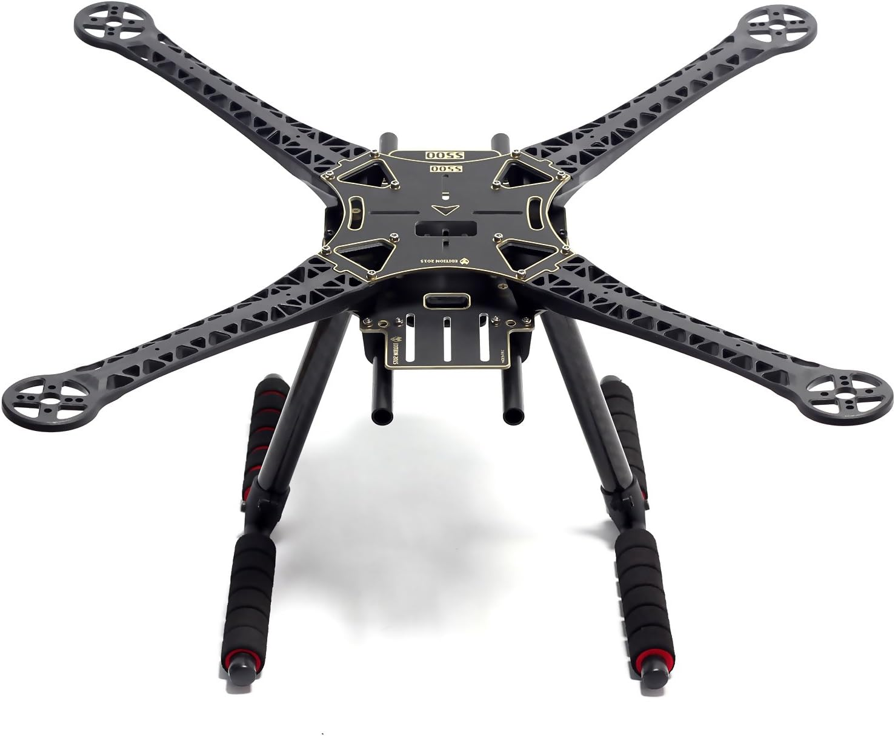

Amazon.ca · S500
Readytosky S500 Frame Kit
Chasis de cuadricóptero de 500 mm con versión PCB integrada y tren de aterrizaje de fibra de carbono, ideal para builds de fotografía aérea y multirrotores DIY.
Ver precio en Amazon
- Chasis de 500 mm de distancia entre ejes.
- Versión PCB integrada para un cableado más limpio.
- Tren de aterrizaje de fibra de carbono.
- Brazos resistentes ideales para fotografía aérea.
- Compatible con motores 2212/2216 y hélices de 10".
- Base versátil para builds con Pixhawk o APM.